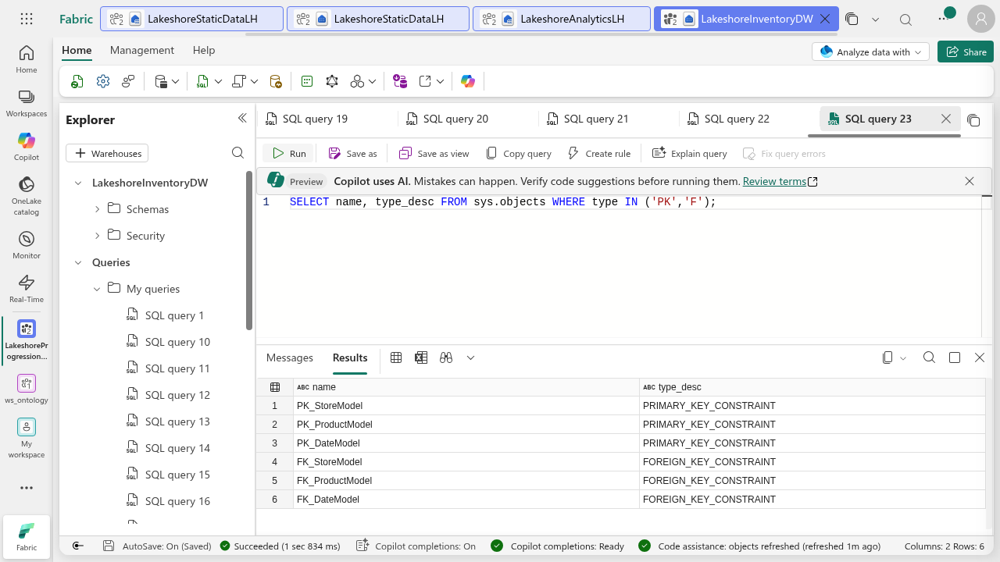
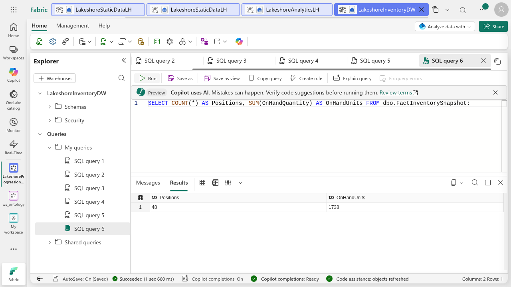
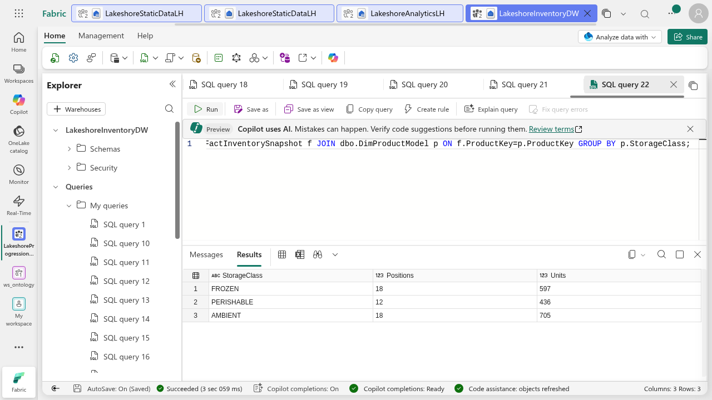
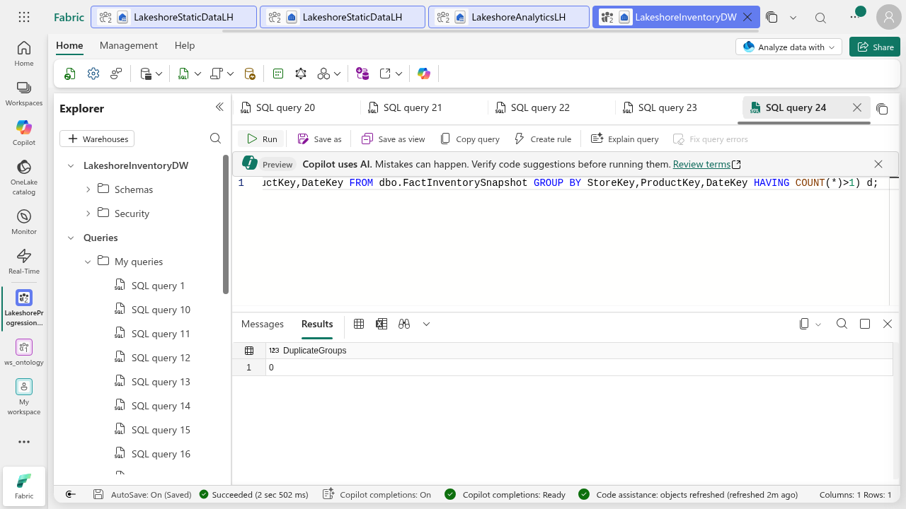
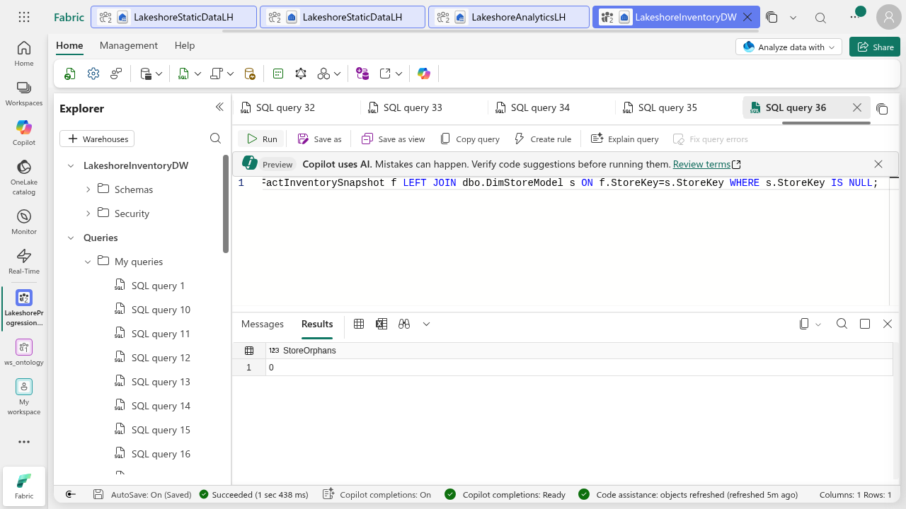
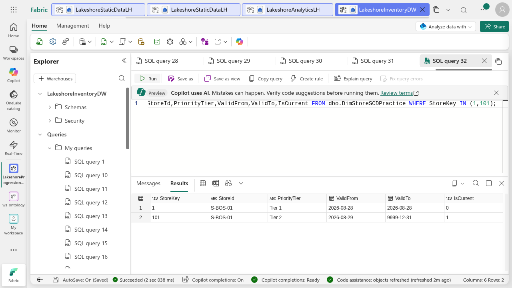
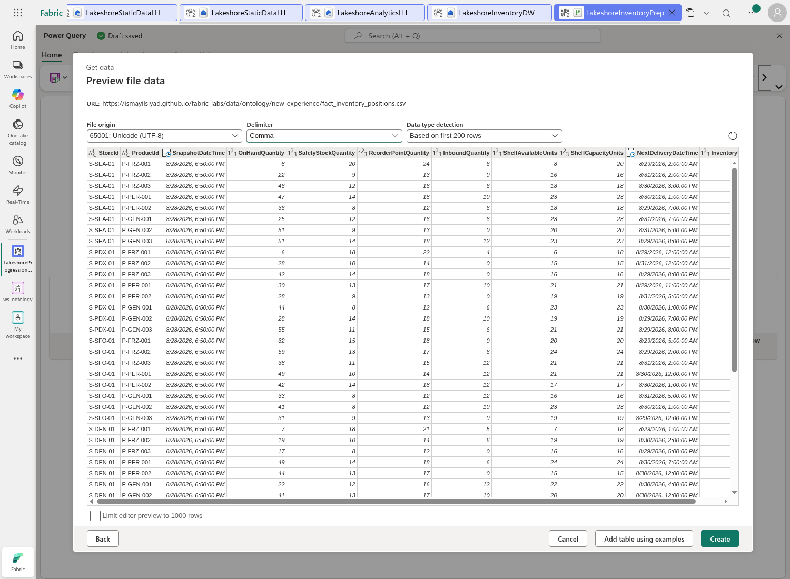
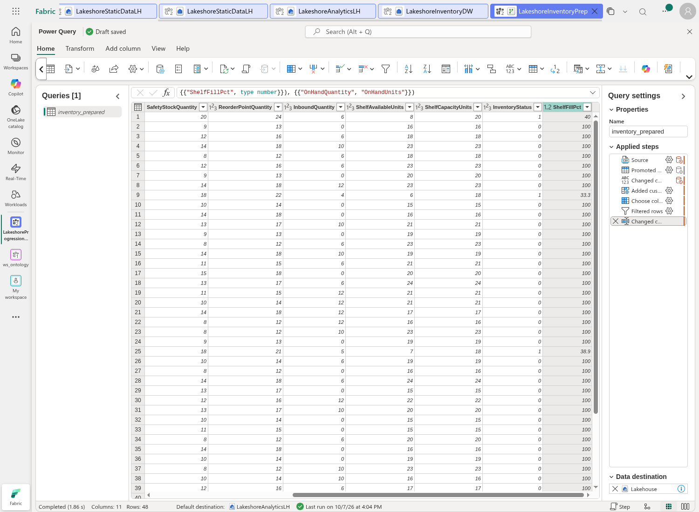
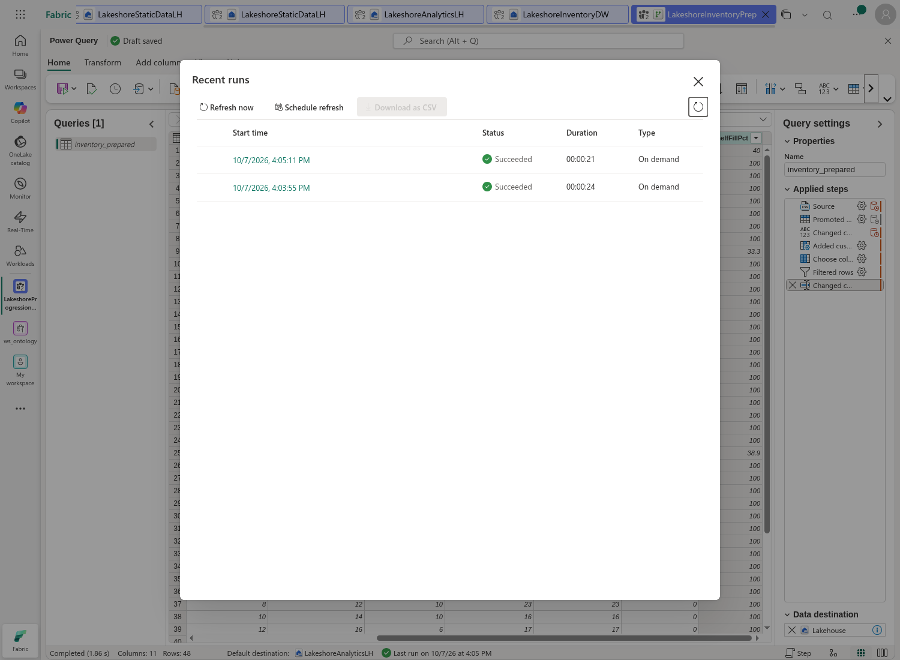

Assignment 3: Model and transform Lakeshore inventory
Assignment 1: MySQL · Assignment 2: OneLake · Assignment 3: Inventory · Assignment 4: Semantic lifecycle (forthcoming) · Assignment 5: Ontology
Lakeshore's stock analysts need a repeatable preparation layer and a dimensional model that answers how many units are available by store and storage class. In Assignment 2 you loaded the operational CSVs into OneLake. Now you will build a warehouse star schema, test dimension change patterns and prepare a separate analytics table with Dataflow Gen2. Both paths use the same Lakeshore inventory snapshot, not a different sales dataset.
This combines Assignment 4a (dimensional modeling) and Assignment 4b (dataflows). Keep your results for Assignment 4's semantic-model validation and Assignment 5's ontology. Allow 90–120 minutes. The screenshots are from a real reference run on October 7, 2026; submit your own evidence.
Part 1: Define the grain and star
Use the unique Fabric workspace you created in Assignment 2 on the instructor-specified capacity. You need permission to create a Warehouse and Dataflow Gen2. If either is unavailable, ask your instructor; do not buy capacity or change tenant settings.
- Verify
LakeshoreStaticDataLHhas 9 locations, 8 products and 48 inventory positions with named columns. - Check the snapshot dates before modeling. This fixed file has one snapshot date:
2026-08-28. It is not current inventory. - Write the fact grain: one StoreId + ProductId + SnapshotDateTime. The model's date grain is daily because this fixed sample has one snapshot per store/product per day. For multiple snapshots per day, extend the key before using this design.
- Draw DimStoreModel → FactInventorySnapshot ← DimProductModel, with DimDateModel → FactInventorySnapshot. Each dimension filters many fact rows. These are single-direction many-to-one relationships in the later semantic model.
| Model table | Key | Expected rows | Meaning |
|---|---|---|---|
| DimStoreModel | StoreKey | 6 | Stores only, not distribution centers |
| DimProductModel | ProductKey | 8 | Product and storage context |
| DimDateModel | DateKey | 1 | August 28, 2026 |
| FactInventorySnapshot | StoreKey + ProductKey + DateKey | 48 | Snapshot quantities, preserving source IDs/time |
On-hand units can be summed across stores and products for one snapshot, but not across snapshot dates. They are semi-additive. Do not call these units sales, revenue or shipment quantity. StandardUnitCost is a cost attribute, not a sale price.
Part 2: Build the warehouse and key metadata
- In your progression workspace select + New item > Warehouse. Name it
LakeshoreInventoryDW. Use a new item; do not reuse or overwrite an earlier warehouse. - Select New SQL query and download the Lakeshore warehouse script. Run one statement at a time in the Warehouse, not the read-only lakehouse SQL endpoint. Check that the complete statement is in the editor before Run.
- The first CTAS statements create DimStore, DimProduct and DimDate staging dimensions from the Assignment 2 lakehouse. Use the three-part source name and adapt the lakehouse name only if yours differs.
- Create the explicit-schema Model dimensions and insert the staging rows. Their integer keys are NOT NULL. Then create FactInventorySnapshot with source fields and surrogate keys. The constant 20260828 is valid only after verifying this fixed sample's one date.
- Add the three primary-key and three foreign-key metadata constraints. Run the catalog query and confirm all six appear.
Tested recovery: The first CTAS keys were nullable, so PRIMARY KEY failed. ALTER COLUMN NOT NULL was not a working fix in this environment. The tested solution was new explicit-schema Model dimensions with NOT NULL keys, followed by INSERT. Keep staging tables for review. Use only the Model dimensions in the semantic model.
Fabric's constraints here are NOT ENFORCED. They describe intent; they do not reject orphan or duplicate rows. Your ETL and quality checks must enforce that intent. Deterministic ROW_NUMBER keys are sufficient for this immutable exercise, not a production incremental surrogate-key generator.

Part 3: Validate the facts and dimension joins
- Run the fact count and unit total query: 48 positions and 1,738 on-hand units.
- Join FactInventorySnapshot to DimProductModel and group by StorageClass. Expect FROZEN 18/597, PERISHABLE 12/436 and AMBIENT 18/705 (positions/units).
- Run the duplicate group query at StoreKey + ProductKey + DateKey. Expect 0 groups.
- Run orphan checks for each of ProductKey, StoreKey and DateKey. Each must be 0. Metadata alone does not prove integrity.
- Explain why a missing dimension row can silently remove a position from an inner-join report. Compare the joined total with the raw total.




Part 4: Practice slowly changing dimensions safely
Use only DimStoreSCDPractice. These are simulated changes, not new source facts. Do not change DimStoreModel or reassign the August 28 facts.
- Create the practice copy with ValidFrom, ValidTo and IsCurrent fields using the script.
- Type 1: correct StoreName for StoreKey 1 by appending “ - corrected”. Query before/after. Explain that this overwrites the attribute rather than retaining its prior value.
- Type 2: expire StoreKey 1 on August 28 and insert the same StoreId as new StoreKey 101, PriorityTier Tier 2, effective August 29. The inclusive date ranges do not overlap.
- Query both versions. Explain why the original snapshot still refers to the August 28 key and why a later snapshot would need to resolve the key as of its own date.
- Describe production safeguards: one current row per business key, nonoverlapping validity intervals, stable key allocation, and atomic expire/insert processing.

Part 5: Prepare inventory with Dataflow Gen2
This second path creates a separate analytics table. It does not replace the warehouse fact or mutate the source tables. CSV is a file source: do not claim these steps were folded to a database.
- Open LakeshoreAnalyticsLH from Assignment 2. Select Get data > New Dataflow Gen2. Name it
LakeshoreInventoryPrep. Its default destination is this analytics lakehouse. - Select Import from a Text/CSV file > Link to file. Enter
https://ismayilsiyad.github.io/fabric-labs/data/ontology/new-experience/fact_inventory_positions.csv. Use a new connection named LakeshoreInventoryCSV, no gateway and Anonymous authentication. Select Next. - Confirm the preview has 48 rows and 11 named columns, then Create. Rename the query in Query settings to
inventory_prepared. This unique output name protects the original inventory table. - Confirm the inferred Changed column type step: IDs text; snapshot/delivery datetime; quantities and status whole numbers.
- Select Add column > Custom column. Name it ShelfFillPct and use the expression below. This handles zero capacity and rounds to one decimal place. Select OK.
if [ShelfCapacityUnits] = 0 then null else
Number.Round(100 * [ShelfAvailableUnits] / [ShelfCapacityUnits], 1)
- Home > Choose columns: deselect NextDeliveryDateTime; keep the remaining source columns and ShelfFillPct.
- Select OnHandQuantity, then Home > Filter rows. Use is greater than or equal to 0. In this fixed sample all 48 rows remain. Do not use greater than 0, since zero stock is meaningful.
- Set ShelfFillPct to Decimal number and rename OnHandQuantity to OnHandUnits. You may use the formula-bar expression below for the final step, referencing the tested Choose columns step.
- Confirm the destination is LakeshoreAnalyticsLH and the new table is inventory_prepared. Keep automatic destination settings for this new practice output. Do not select a pre-existing table.
- Select Home > Save & run. Run started is not success. Open Recent runs and wait for Succeeded; capture the status. If a run fails, inspect its details before changing the query.
Table.RenameColumns(
Table.TransformColumnTypes(
Table.SelectRows(#"Choose columns", each [OnHandQuantity] >= 0),
{{"ShelfFillPct", type number}}),
{{"OnHandQuantity", "OnHandUnits"}})

Part 6: Reconcile the saved output
Open the analytics lakehouse table or query its SQL endpoint. In the reference run, the warehouse could also query the analytics lakehouse with its three-part name. Wait for endpoint synchronization if the new table is not yet visible.
SELECT COUNT(*) AS Positions, SUM(OnHandUnits) AS Units,
MIN(ShelfFillPct) AS MinShelfFill
FROM LakeshoreAnalyticsLH.dbo.inventory_prepared;Expect 48 positions, 1,738 units and minimum shelf fill 33.3%. Low shelf-fill examples are 40%, 33.3% and 38.9%; the other sample positions are full. Shelf-fill percentage is a per-position ratio, not an additive unit measure.
Part 7: Submit and continue
- Submit your grain statement, star diagram, SQL script and dimension/fact counts.
- Submit the six constraint entries, joined totals, duplicate and all three orphan results.
- Submit Type 1 before/after evidence and the two Type 2 versions, explaining which key a later fact would use.
- Submit the Power Query steps, successful run, destination table and reconciled totals.
- Keep the source lakehouse, warehouse, analytics lakehouse and Dataflow for Assignment 4. Do not delete workspaces or source resources.
Sources and tested scope
Adapted from Design dimensional models and Transform data using dataflows. Actual reference run: warehouse creation, staging/explicit-schema dimensions, fact load, six constraints, join/grain/orphan checks, separate SCD practice, anonymous canonical CSV import, custom calculation, selection/filter/type/rename, successful Dataflow runs and output reconciliation. Source operational records are retained. The next assignment validates semantic filtering and deployment; SQL key metadata does not itself establish semantic-model relationships.